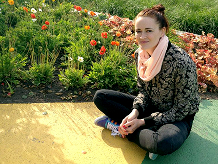
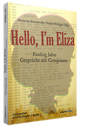

Marianna Baranovska-Bölter
MA Medienwissenschaft (Media Studies)
- Located: Hamburg, Lüneburg, Berlin
- Media Literacy Promoter at the Leuphana University Lüneburg
- Video Production Support for the Leuphana University Lüneburg
- Research Associate at Macromedia University 2015-2022
- Lecturer at the Macromedia University, Hamburg, 2015-2022
- Lecturer at the Humboldt University to Berlin, 2018
- Lecturer at the Leuphana University (ICAM), 2014 - 2018
- Minor Digitale Medien Lüneburg and Major Digital Media Hamburg
Currently
- Media Literacy Promoter at the Leuphana University Lüneburg 2021-2024
- Video Production Expertise and Support for the Joint-ProjectLeuphana: Digital Transformation Lab for Teaching and Learning (DigiTal) 2021-2024
- Junior Research Professor for the BMBF Project SCoRe - Students' Crowd Research
Video based Learning and Sustainability Research, Macromedia University, Hamburg
- PhD planned on the Topic of History of Science Video and Film in Germany
e.g. IWF Göttingen

Publications
-
in print 2022 - Essay:
"Forschendes Sehen aus Perspektive der Videoproduktion" by A. Kopischke, M. Baranovska-Bölter & A. Hebbel-Seeger,
in Medien in der Wissenschaft geplant im 2022, Band 79
-
in print 2022 - Essay:
"Forschungsdaten erheben mit Video" by A. Kopischke, M. Baranovska-Bölter & A. Hebbel-Seeger,
in Medien in der Wissenschaft geplant im 2022, Band 79
-
in print 2022 - Essay:
"Produktion von Videohilfen im Rahmen des SCoRe-Projektes" by M. Baranovska-Bölter, A. Kopischke & A. Hebbel-Seeger,
in Medien in der Wissenschaft geplant im 2022, Band 79
-
in print 2022 - Essay:
"Storytelling und Wissenschaftskommunikation im Video" by M. Baranovska-Bölter, A. Kopischke & A. Hebbel-Seeger,
in Medien in der Wissenschaft geplant im 2022, Band 79
- 2019 - Essay: "LectureCast als 360° - Video. Welchen Einfluss haben Immersion und Präsenzerleben auf die Lernleistung?" by A. Hebbel-Seeger, A. Kopischke, P. Riehm, M. Baranovskaa PDF in Teilhabe in der digitalen Bildungswelt 2019, Medien in der Wissenschaft, Band 75
- May, 2019 - Essay: "LectureCast as 360-degree video – What impact do immersion and presence experience have on learning performance?" by A. Hebbel-Seeger, A. Kopischke, P. Riehm, M. Baranovskaa
- 2nd Edition planned in 2022: 2018 - Miscellany: HELLO, I’M ELIZA - Fünfzig Jahre Gespräche mit Computern Stefan Höltgen/Marianna Baranovska (Hg.): ca. 350 pages (paperback) with numerous b/w images The essays of the miscellany are partly the proceedings of the conference, which took place in October, 2016 at the Institute of Music and Media Studies in Berlin (HU), and brought together authors from such fields as Computer Science, Philosophy, Media Studies and Media Dramaturgy. Among the particular texts are the origins of the first chatbot ELIZA that Joseph Weizenbaum had created in 1966 at the AI Lab of the MIT along with the first German translation of his publication on ELIZA. In addition to the topic, authors elaborated on the question how ELIZA influenced the AI research, the computer culture, its critics and art.
Conferences & Talks
- 5th of December, 2019, Bremen, Germany - Guest Talk at the University of Bremen, Chatbot Seminar: Eliza - die Mutter aller Chatbots
- 16-19 September 2019, Berlin, Germany - GMW-Tagung 2019 "LectureCast als 360° - Video. Welchen Einfluss haben Immersion und Präsenzerleben auf die Lernleistung?", "Nutzung von 360°-Video im Kontext forschenden Lernens" - Workshop by A. Hebbel-Seeger & M. Baranovskaa Schedule
- 20-23 May 2019, Athens, Greece - 21st Annual International Conference on Education, "LectureCast as 360-degree video – What impact do immersion and presence experience have on learning performance?" Slides
Seminars 2014 - 2018
-
Humboldt University, Berlin, MA:
- On the Track of History of the Object Orientation Leuphana University, Lünebrug, BA:
- Digital Media Production I (ENG)
- A Computer as a Medium: Basic Texts / Grundlagentexte zum Computer als Medium (GER)
- (Hi)story of EDP (electronic data processing) / Geschichte der EDV (elektronischen Datenverarbeitung) (GER)
- History and aesthetics of a moving image / Geschichte und Ästhetik des bewegten Bildes (GER) Leuphana University, Lünebrug, BA:
- Audio-Visual Media (ENG)
- TV Format Development (ENG)
- Scientific Methods / Wissenschaftliche Methoden (ENG/GER)
Porjects & Events
2018 - 2022: Students' Crowd Research - SCoRe
The joint project SCoRe (Student Crowd Research), funded by the German Federal Ministry of Education and Research (BMBF) is carried out by the Universities of Bremen, Hamburg, Kiel and the Ghostthinker Ltd., as well as the Macromedia University, Hamburg, Prof. A. Hebbel-Seeger, A. Kopischke & M. Baranovskaa in particular, where they expand the video based learning and research perspective by analyzing the contribution made by the innovative video formats, including 360° video, to the research-based learning within a crowd. This research is carried out between October, 2018 and March, 2022.
2014 - 2017: EU-Project JamToday
- JamToday is the first panEuropean Network dedicated to applied game design.
- It brings together different types of stakeholders (such as creative clusters, game companies, education and research institutes, public sector institutions, municipalities etc.) from various sectors, fields and expertise for running game jams across Europe.
- The team of the Macromedia University Hamburg - its Head of Media School in particular Prof. Dr. Andreas Hebbel-Seeger and the Research Associate Marianna Baranovskaa carried out the JamToday EU-Project between 2014 and 2017
- As part of this JamToday EU-Project, the "IndieGameleon Festival 2015" was organized in Hamburg.
...is a festival organized by Indietopia/NL, Slashgames/GER and Macromedia University/GER for indie game developers, game design students and indie game enthusiast.
Consisting of:
IndieGameleon Game Jam 2015
- Date: September 11 – September 13, Location: “Forum” – HAW Hamburg
- Indie Gameleon Game Jam Hamburg brought together game-, sound designers, programmers, or just someone who is interested in making games.
- Six teams made games from scratch within 48 hours, according to the theme of "Making a good Impact of the World".
- By the end of the Jam, a jury from the game development scene gave valuable feedback on the fledgling-game along with prizes and awards.
IndieGameleon Conference 2015
- Date: September 14 – September 15, Location: “Forum” and “Ditze” HAW Hamburg Fakultät Design, Medien und Information
- The Indie Gameleon conference is known for sharing stories and experiences.
- For two days, our program was filled with lectures and workshops given by speakers that are experts in one or more fields of game development.
- From graphics to programming, to business and marketing. These lectures were given simulataneously on two tracks over two days.
- The lectures and workshops gave visitors the opportunity to hear the stories and learn from the experiences of industry veterans and fellow game developers.
- Next to that, there were also workshops in which one could participate in learning more about indie games by actually doing something (for example paper prototyping).
Education
- 2009-2013: Humblodt-Universität zu Berlin, GER
- Master of Arts in Media Study (MA Medienwissenschaft)
- 2006-2007: Humboldt State University, California, USA
- Classes in Computer Science, Computer Information Systems, Video Journalism
- 2004-2008: University of Applied Science, Bremen, GER
- Bachelor of Science: Digital Meida (BS Digitale Medien)
Experience in Image & Video Production
- 2014: Stapp TV, Hamburg, GER
- 2013: Zalando Zuumeo, Berlin, GER
- 2012: Zalando Mybrands, Berlin, GER
- 2011: Zalando Zalando Think Tank, Berlin, GER
- 2010: Gracenote, Berlin, GER
- 2009: Defy Agency, Los Angeles, CA, USA
- 2008: Pine Tree, Northeast Harbor, ME, USA
- 2007: Weser TV, Bremen, GER
- 2006: Tide TV, Hamburg, GER